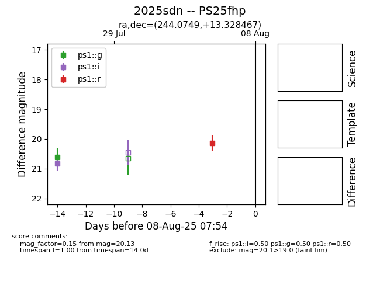

Target 2025sdn at 2025-08-07 22:13, see:
TNS: wis-tns.org/object/2025sdn
YSE: ziggy.ucolick.org/yse/transient_detail/2025sdn
alt names
2025sdn (yse,tns)
PS25fhp (panstarrs)
coordinates:
equatorial (ra, dec) = (244.0749,+13.32847)
galactic (l, b) = (27.4526,+40.35984)
photometry
last ps1::g=20.61, ps1::i=20.82, ps1::r=20.13
1 ps1::g, 1 ps1::i, 1 ps1::r detections
